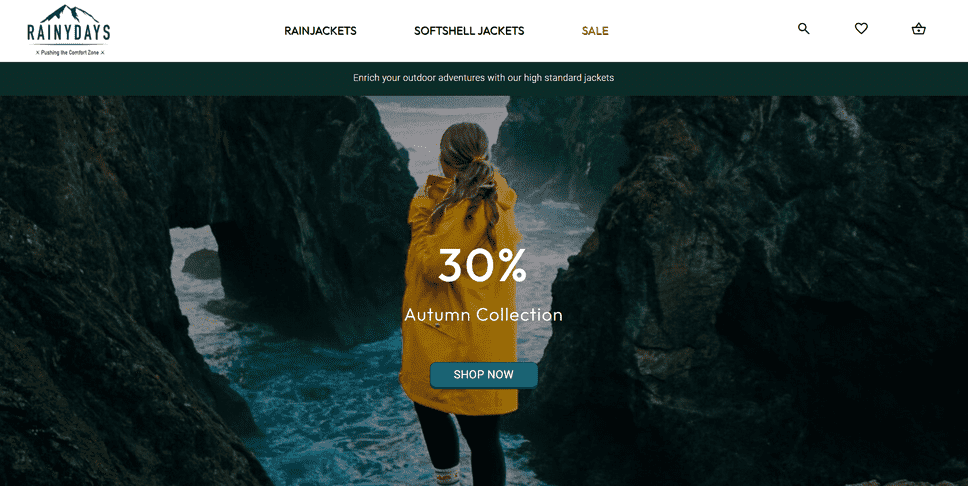

Details about my projects
All About Adventures

This is my Project exam 1 work, where I had to build a front-end user interface for a blogging application. This is my most recent work, and also the project that challenged me the most, in a positive way. We had to use JWT to authenticate users, and use GET, POST, PUT, and DELETE requests to interact with the API data created in the blog posts. It was a lot of fun making the interactive banner carousel with the latest blog posts, and creating a functional search and sorting mechanism which I had not done before. This project was a fun opportunity for me to implement my interests in nature and hiking, which this fictive blog is about.
Rainy Days
This is my cross course project, a webshop called RainyDays. This was the first coding project I ever did after learning HTML and CSS. No javascript is used for this project, so the site isn't interactive or functional. The CSS styling of the site has been updated after my skills with CSS improved over the months. This was a fun first project, which gave me inspiration and excitement to continue on my coding journey.
CSM: Community Science Museum

This is my Semester Project 1 work, a science museum website for children. No javascript is used for this project either. This project challenged me a little due to having to style the site to appeal to both children and teens, but also their parents and teachers. But I loved the challenge, and in the end I delievered a project I was pleased with, that I had spent a lot of time perfecting.